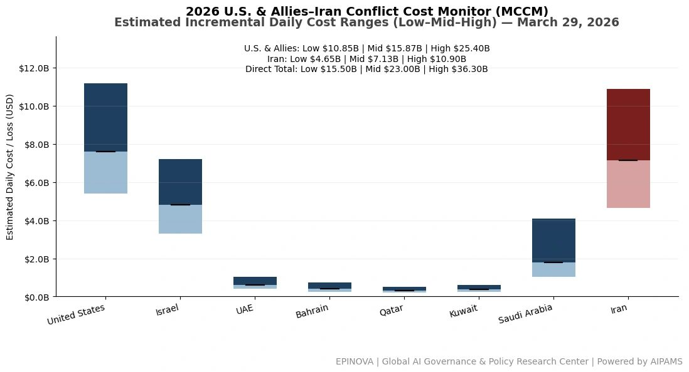
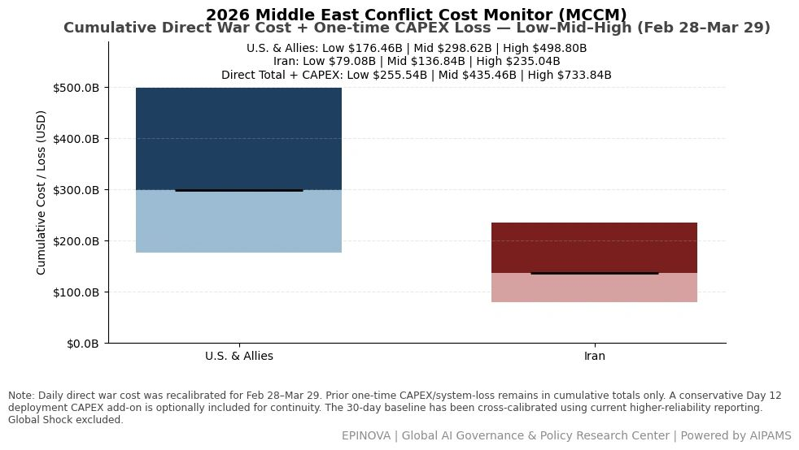
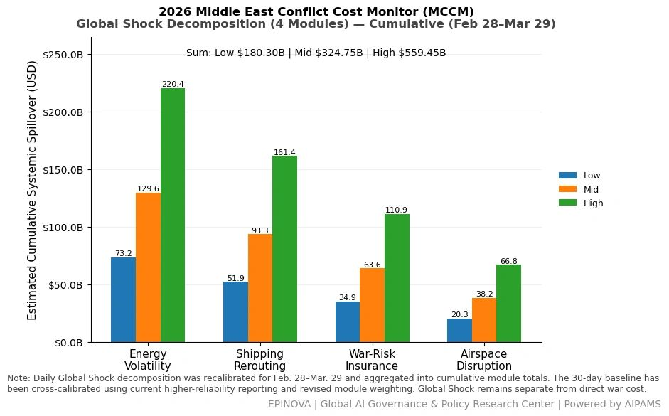
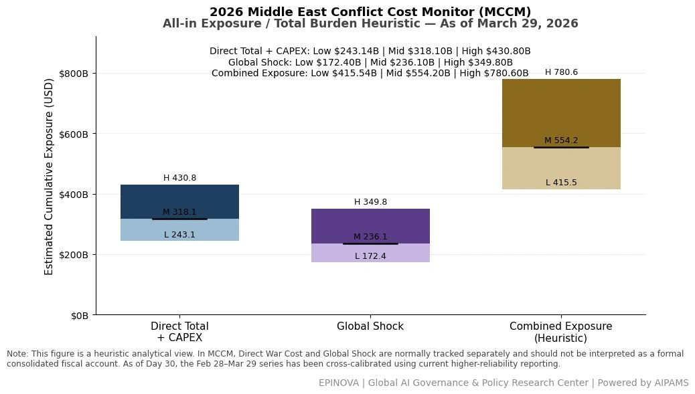

2026 U.S. & Allies–Iran Conflict Cost Monitor (MCCM): March 29
Powered by AIPAMS (Adaptive Integrated Policy & Analytics Modeling System)
1. Introduction
The 2026 Middle East Conflict Cost Monitor (MCCM) provides an event-driven, scenario-based assessment of daily conflict-related expenditures and losses across major state actors involved in the crisis. Using a structured low–mid–high estimation framework, the series aggregates publicly available operational indicators, force posture changes, strike intensity proxies, reported material damage, and infrastructure disruptions to produce comparable daily cost ranges.
The MCCM framework distinguishes between three analytical components:
(1) Direct War Cost, which includes military operational expenditures, asset losses, and selected capital losses (CAPEX);
(2) Infrastructure and energy-sector disruption costs linked to conflict operations; and
(3) Systemic market spillovers (“Global Shock”), which capture broader economic and logistical externalities associated with regional escalation.
Direct war costs and systemic spillovers are reported separately to maintain analytical clarity between conflict-specific expenditures and wider economic effects.
MCCM is designed as a rolling monitoring instrument rather than a definitive accounting ledger. Estimates are produced using scenario-bounded ranges intended to support comparative analysis and policy discussion rather than precise fiscal accounting. All values are expressed in current U.S. dollars (USD) and may be revised retroactively as verification improves and additional information becomes available.
As the conflict evolves, MCCM increasingly captures not only direct cost accumulation but also dynamic interactions between military operations, strategic signaling, and systemic economic responses, reflecting a transition from a cost-tracking model to an integrated exposure assessment framework.




2. Methodological Notes
A. Scenario Ranges.
All estimates are presented as bounded ranges.
- Low: Minimum confirmed observable losses.
- Mid: Most probable estimate based on publicly available reporting and operational cost parameters.
- High: Upper-bound scenario incorporating reported but not independently verified high-value asset losses.
B. Daily Estimates.
Reported figures represent incremental 24-hour estimates of conflict-related costs and losses.
C. Cumulative Totals.
Cumulative values reflect the aggregation of daily scenario ranges over the reporting period. High-range values may include scenario-based adjustments for reported strategic asset losses pending independent verification.
D. Global Shock.
Global Shock represents systemic economic spillovers generated by the conflict, including both escalation-driven disruptions and temporary stabilization effects arising from partial de-escalation signals (e.g., controlled energy transit, diplomatic signaling). It is decomposed into four modules:
- Energy Volatility
- Shipping Rerouting
- War-Risk Insurance Premiums
- Airspace Disruption
These modules capture major economic and logistical externalities associated with regional escalation.
E. Combined Exposure.
In selected figures, Direct War Cost and Global Shock may be displayed together as a Combined Exposure heuristic to illustrate the approximate scale of total economic exposure associated with the conflict. This aggregation is analytical only and should not be interpreted as a formal consolidated fiscal account. Under high-frequency strike conditions and partial system stabilization, Combined Exposure serves as a more informative indicator of systemic burden than isolated cost metrics.
F. Revision Policy.
All MCCM estimates are derived from open-source reporting and model-based reconstruction and remain subject to revision as verification improves.
G. Structural Interpretation Note.
At later stages of the conflict, cost accumulation alone may not fully capture strategic dynamics. MCCM therefore incorporates an exposure-oriented perspective, recognizing that relatively low-cost offensive actions can impose disproportionately high and persistent burdens on complex defense systems and global networks.
This asymmetry may lead to cumulative divergence in system sustainability, particularly under saturation conditions.
Selected References:
Associated Press. (2026, March 28). “No Kings” protests held to rally against Trump administration, in photos. https://apnews.com/article/b4ce14b0ab16d148f4fdbe642c20fdb2
Associated Press. (2026, March 28). “No Kings” rallies draw crowds across U.S., in Europe. Springsteen headlines Minnesota demonstration. https://apnews.com/article/2fab6b3a64e5275bcf111e8dd6d2e075
Associated Press. (2026, March 29). Iran warns the U.S. against a ground invasion as regional powers meet in Pakistan. https://apnews.com/article/f10f6b09b8643f683e31803897aa19f7
Associated Press. (2026, March 25). Iran rejects U.S. ceasefire plan, issues its own demands as strikes land across the Mideast. https://apnews.com/article/be07c54139bcc70672bb33f0773ede6a
CNN. (2026, March 27). Isa Soares Tonight [Transcript]. https://transcripts.cnn.com/show/ist/date/2026-03-27/segment/01
CNN. (2026, March 27). The Brief with Jim Sciutto [Transcript]. https://transcripts.cnn.com/show/tbwjs/date/2026-03-27/segment/01
Reuters. (2026, March 24). Iran says “non-hostile” ships can transit Strait of Hormuz. https://www.reuters.com/world/middle-east/iran-says-non-hostile-ships-can-transit-strait-hormuz-ft-reports-2026-03-24/
Reuters. (2026, March 25). Germany’s Merz says public finances cannot offset all price rises from Iran war. https://www.reuters.com/business/germanys-merz-says-public-finances-cannot-offset-all-price-rises-iran-war-2026-03-25/
Reuters. (2026, March 26). Rubio says Iran war to last “weeks not months,” no U.S. ground troops needed. https://www.reuters.com/world/asia-pacific/trump-pauses-attacks-irans-energy-plants-says-talks-are-going-well-2026-03-26/
Reuters. (2026, March 27). German Chancellor Merz says he has doubts over Iran war aims. https://www.reuters.com/world/europe/german-chancellor-merz-says-he-has-doubts-over-iran-war-aims-2026-03-27/
Reuters. (2026, March 27). Twelve U.S. troops wounded in Iran strike on base in Saudi Arabia, U.S. official says. https://www.reuters.com/world/middle-east/twelve-us-troops-wounded-iran-strike-base-saudi-arabia-us-official-says-2026-03-27/
Reuters. (2026, March 27). U.S. can only confirm about a third of Iran’s missile arsenal destroyed, sources say. https://www.reuters.com/world/middle-east/us-can-only-confirm-about-third-irans-missile-arsenal-destroyed-sources-say-2026-03-27/
Reuters. (2026, March 27). Chinese ships halt attempt to exit Hormuz despite Iran safe passage assurances. https://www.reuters.com/world/china/chinese-ships-halt-attempt-exit-hormuz-despite-iran-safe-passage-assurances-2026-03-27/
Reuters. (2026, March 28). Iran accuses U.S. of ground assault plans as Pakistan hosts regional talks. https://www.reuters.com/world/asia-pacific/yemens-houthis-enter-iran-war-with-attacks-israel-while-us-marines-arrive-region-2026-03-28/
Reuters. (2026, March 28). Bahrain’s Alba confirms Iranian attack on its facilities. https://www.reuters.com/world/middle-east/bahrains-alba-confirms-iranian-attack-its-facilities-2026-03-28/
Reuters. (2026, March 28). Pictures: One month of war with Iran. https://www.reuters.com/pictures/pictures-one-month-war-with-iran-2026-03-28/LEST66CMKBJUPM4R6WTDMNLJU4
Reuters. (2026, March 29). Most Gulf markets ease despite fears of broader Iran conflict. https://www.reuters.com/world/middle-east/most-gulf-markets-ease-fears-broader-iran-conflict-2026-03-29/
Reuters. (2026, March 29). Pakistan hosts regional powers for Iran talks, with focus on Hormuz proposals. https://www.reuters.com/world/asia-pacific/pakistan-hosts-regional-powers-iran-talks-with-focus-hormuz-proposals-2026-03-29/
Reuters. (2026, March 29). Pentagon preparing for weeks of ground operations in Iran, Washington Post reports. https://www.reuters.com/world/middle-east/pentagon-preparing-weeks-ground-operations-iran-washington-post-reports-2026-03-29/
The Washington Post. (2026, March 28). Trump administration weighs a weeks-long ground operation inside Iran. https://www.washingtonpost.com/national-security/2026/03/28/trump-iran-ground-troops-marines/
The Wall Street Journal. (2026, March 29). What is the E-3 Sentry, the U.S. aircraft struck by Iran? https://www.wsj.com/livecoverage/iran-war-middle-east-news-updates/card/what-is-the-e-3-sentry-the-u-s-aircraft-struck-by-iran--8HdGiZxiNlXOA0qCyFvr
Share this post: